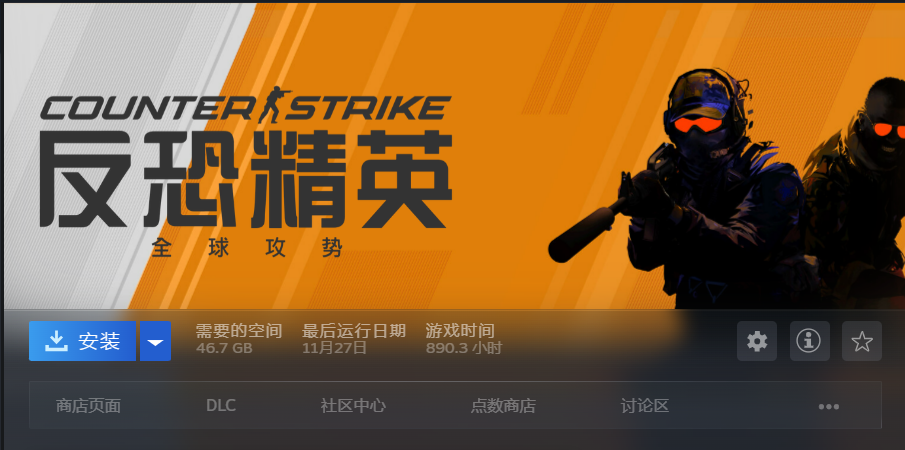
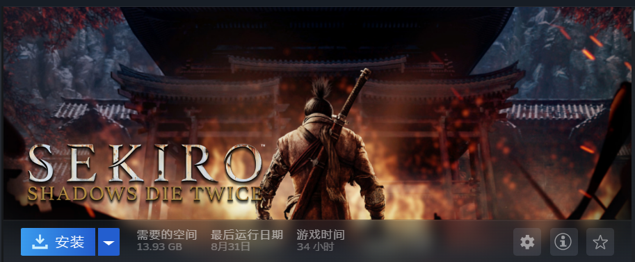

"No Games, No life."
我好像自小就喜欢玩游戏，尽管自己算是个比较三分钟热度的人，很难有什么持之以恒的爱好，但玩游戏这点屡遭谴责的爱好倒是延续了这么多年一直没变
也不知道这是因为自己生性游手好闲不务正业玩物丧志虚度光阴，还是因为游戏世界真的很丰富多彩？
所以如果让我重开一次，我或许还会耗费大量的时间在游戏上，去体验无数制作者们创造力的涌现，去感悟万千行代码之上的奇迹。
由此，简单分享几款令我印象深刻的游戏：
-
《CS》系列：

这应该是时下最受年轻人欢迎的竞技游戏之一。我从2019年入坑，在上面花费了近一千小时的光阴。这款游戏于我而言更像是一项运动，考验反应力，决策能力和团队沟通能力。其特色是极短的ttk，输掉对局会给人极大的挫败感，所以与此同时，翻盘，合作取胜也会让人体会到这款游戏真正的魅力。 -
《Hollow Knight》：

这或许是最优秀的类银河恶魔城游戏，游戏设定在一个名为“空洞巢穴”（Hollownest）的错综复杂的地下城国度。这里曾经是虫子和猛兽的梦想之乡，但现在已经变成了一个被遗忘的深渊。玩家则将扮演一个出逃的容器（Vessel），在回到圣巢探索自己的身世之后，击败散播瘟疫的光明与梦境之神辐光，拯救圣巢。
我喜欢这款游戏，是因为它作为2D平台跳跃游戏，设定和玩法十分有创意与挑战性。同时游戏的碎片化叙事也让玩家在游玩过程中逐步了解剧情，引人入胜。 -
《Sekiro:shadows die twice》：

此为TGA2019年度最佳游戏，也是类魂游戏中较为出圈的一款。讲述了日本战国时代一名叫狼的忍者完成使命的故事。其关于不死之力的设定以及人物围绕龙胤之血不同想法构成了本作的矛盾与冲突的核心，也带给我许多思考。
同时，游戏架势，弹反种种设定十分有游戏性和创意，虽然游戏难度很大，但反复尝试之后击败boss真的很有成就感。
游戏行业发展几十年有余，优秀的游戏其实浩如烟海，其高度可玩性更是让人难尽其义。
这么多年来，随着自己对游戏的不断了解，心中不禁萌生一丝希冀：
我以后是否可以开发出一款优秀的游戏呢？